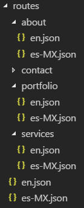

Supporting multilingual applications in JSS
Overview of how JSS apps handle multilingual content and dictionaries
Sitecore JSS allows you to take advantage of the content language versioning feature of Sitecore.
There are typically two concerns with rendering translated data from Sitecore:
The primary page content.
Dictionary items used for translation of labels, button text, and so on.
The sample apps show one approach to using the tools provided by JSS to make your app fully translatable.
Rendering translated Sitecore content
When getting content from Sitecore, whether with GraphQL or with REST, the request is made behind the scenes to the Sitecore Layout Service.
The Layout Service respects the Sitecore Language Context when fetching route and context data, meaning that requests to the Layout Service can utilize the sc_lang parameter to request content in a specific language. For example, http://JssReactWeb/sitecore/api/layout/render/jss?item=/Services&sc_lang=es-MX&sc_apikey={YOUR_API_KEY}.
You can choose how you invoke the Layout Service and handle language changes.
If you set up your JSS project using one of the sample applications, your application already handles the fetching of layout data.
Acquiring Sitecore dictionary phrases
Sitecore JSS provides a Dictionary API to help you acquire translated phrases in a JSS app.
If you set up your JSS project using one of the sample applications, your application already handles the fetching of dictionary phrases.
Translated route and context data in disconnected mode
To simulate translated content when running the application in disconnected mode, the Disconnected Layout Service provided by JSS sample applications mocks the interface of the Sitecore Layout Service, including the language data. The Disconnected Layout Service is powered by the JSS Manifest data, which is single-language.
However, the service regenerates the manifest automatically when a different language is requested by the app. Data must be available in multiple languages to support this use case.
Note
The disconnected Layout Service is not used when developing the Sitecore-first development workflow.
The sample apps have a default convention of using lang.yml or JSON files to enable the definition of content and layout data for different languages.
|  |
This is only the default convention for multilingual content for sample apps, defined in /sitecore/definitions/routes.sitecore.js. You can define your own conventions and ways to store multilingual data that matches your preferences and needs.
Translated content and disconnected mode import
In most cases, an application developed while working without a Sitecore instance will probably transition to using Sitecore data before translation is a consideration.
However, it is possible to develop disconnected multilingual content while working without a Sitecore instance. This technique is demonstrated in the sample apps, by defining routes using a file for each language, such as en.yaml and es-mx.yaml.
To deploy a multilingual disconnected application, you must deploy the application for each language separately, because:
The app has a single default language, defined in the
package.jsonfile. All sample apps default toen.When generating a manifest, the manifest contains only one language at a time.
When deploying an update package, only one language is included in the package at a time.
The default language when manifesting or packaging is the one defined in
package.json
Note
If you are not deploying content/route data using the arguments --includeContent or --includeDictionary, you do not deploy multilingual data and can, therefore, deploy in a single step.
To deploy your items to Sitecore for a language:
In a terminal, in the root directory of your JSS application, run the following command:
jss deploy items --language=es-MX --includeContent --includeDictionary
Note
The
jss deploy itemscommand does not deploy files.The commands
jss deploy filesandjss deploy appare not supported when working against an Experience Manager (XM) Cloud Content Management instance. Therefore, you can not deploy files.
Repeat the step for each language you want to deploy.
Translated content in headless server-side rendering mode
The headless server-side rendering example included with JSS works partly by translating and proxying the initial route URL into a request to the Layout Service. This requires some intelligence on the structure of your route URLs, if they contain anything other than the Sitecore route path, or if you want the proxy to append a language parameter. To facilitate this, the proxy function accepts an optional parseRouteUrl function that it expects to return an object with lang and sitecoreRoute properties.
The example populates this function with the exported function parseRouteUrl. You can inspect a server bundle for React and Vue.js sample apps in the /server/server.js file or, for Angular apps, in the server.bundle.ts file.